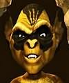

Forums galactiques > Taverne galactique : lieu de discussion informel > Enigme d'Origine
Pages : 1 2
| Blacksad Réputation à la taverne : 153  08/10 ETU 19:27 | Score : 1 Détails pardonnez moi Kynet, je pensai que ce systeme etait encore propice aux défouloirs
d'ailleurs il me vient une idée... | ||
| Bestiole Verte Réputation à la taverne : 0  08/10 ETU 19:47 | Score : 0 Détails Kynet n'a aucune crainte à avoir de moi...je ne suis pas propice à la guerre...Enfin ça dépend qui la demande ou qui ne la demande pas...Un chat qui devient tigre ? Et pourquoi pas une bestiole qui devient Troll ??
| ||
| Eiganjo Réputation à la taverne : 289  08/10 ETU 19:49 | Score : 1 Détails Les chats ca cherchent toujours la merde....
Il faut pas leur en vouloir c'est leur nature, plus c'est petit plus c'est co... euh plus c'est garessif pardon. Les chats c'est tou petits et ca cherche tout le monde. A bas les chats! vive les chiens! vive les autres! | ||
| William Réputation à la taverne : 772  08/10 ETU 20:06  | Score : 1 Détails Et les chiens la crée volontiers pour les chats, non ? Elle était facile, je vous l'accorde.
Mais, un Troll, n'est-ce pas déjà une bestiole, à l'origine ? Prenez des torches pour votre périple, Détective. Ca pourrait vous permettre d'y voir plus clair. | ||
| Bestiole Verte Réputation à la taverne : 0 08/10 ETU 20:13 | Score : 0 Détails William Sigheim, le Gouverneur de la Jirion-du-Roy, a peut-être raison...
| ||
| Blacksad Réputation à la taverne : 153 08/10 ETU 21:22 | Score : 1 Détails il est facile de lire un descriptif, bestiole, mais etes vous suffisament perspicace pour detecter toute la finesse qui se cache derriere celui ci ??
william n'est pas qu'un gouverneur, c'est aussi un fin penseur et un commandant hors pair si l'on suivait votre raisonnement, vous n'auriez aucune crainte a m'attaquer... après tout, je ne suis qu'un detective... | ||
| Bestiole Verte Réputation à la taverne : 0 09/10 ETU 20:50 | Score : 0 Détails Petit malin, à la belle fourure noire, on devrait faire équipe...
|
Pages : 1 2
Forums galactiques > Taverne galactique : lieu de discussion informel > Enigme d'Origine